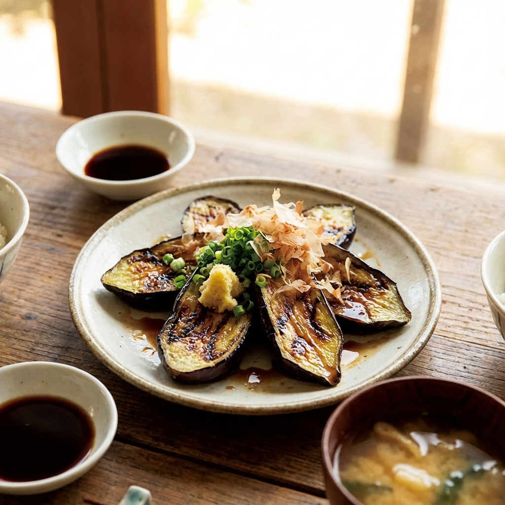

夏秋野菜
とろとろナス

火を通すと、クリームのような極上食感。
ツヤツヤと輝く濃い紫色の肌。水分をたっぷりと含んだドドンコ農園のナスは、加熱調理専用と言っても過言ではありません。
油との相性が抜群で、火を通すと果肉がとろりと溶け出し、濃厚なクリームのような舌触りに変化します。
ナスの常識を覆す、感動の食感体験をお約束します。
おすすめの食べ方：ナスのステーキ & 揚げ浸し
厚めに輪切りにして、多めの油でじっくりとソテーし、生姜醤油と鰹節でいただく「ナスステーキ」が一番の贅沢。
また、素揚げして出汁に漬け込む「揚げ浸し」にすれば、ジュワッと溢れる旨みスープが楽しめます。